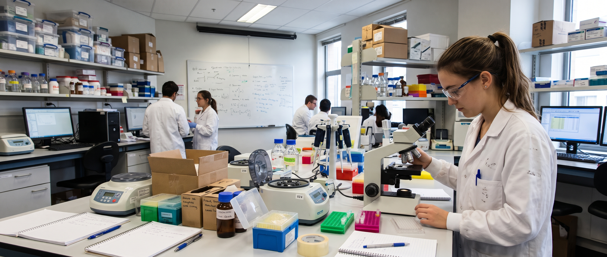

Congresso
Inscrições abertas para o III Congresso de Biomedicina
Submissão de trabalhos científicos até 20 de novembro.
 BioHub
Área da Liga →
BioHub
Área da Liga →
Liga Acadêmica de Biotecnologia · UniALFA
Artigos científicos, notícias e encontros para estudantes que constroem o futuro da Biotecnologia.

Atualizações
Reserve a data
Confira os próximos encontros da BioHub e participe dessa jornada de conhecimento.
Ver encontros ↗